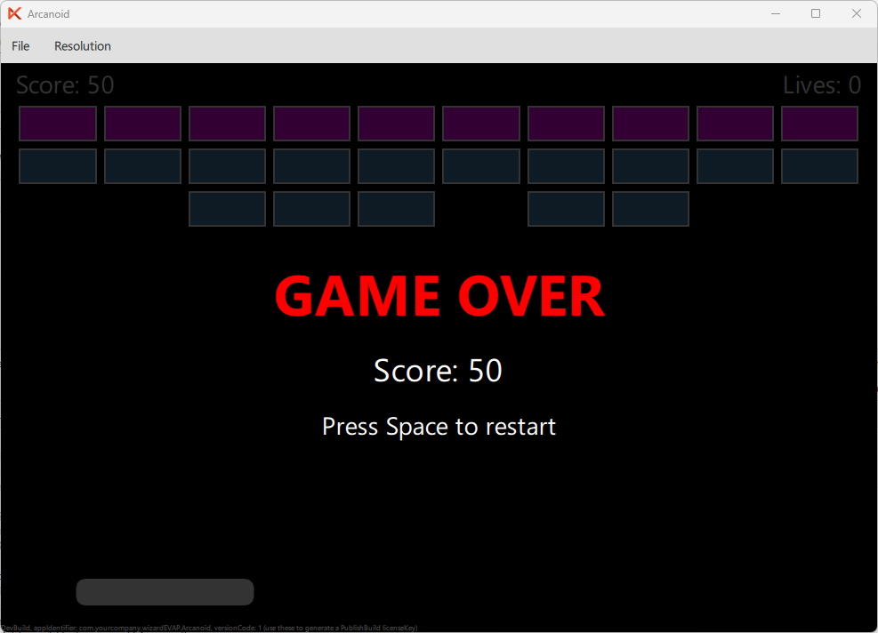

In this part of the tutorial, we will add a lives system to our Arcanoid game. The player starts with 5 balls. Each time the ball falls below the screen, one life is lost. When all lives are gone, the game is over.
Step 1: Adding Lives Property
Add a lives property to the gameArea, next to the existing score property:
// game variables property int score: 0 property int lives: 5
Step 2: Adding Lives Display
Add a Text element to show the remaining lives in the top-right corner of the game area, next to the existing score display:
// Lives display Text { text: "Lives: " + gameArea.lives color: "white" font.pixelSize: 14 anchors.right: parent.right anchors.top: parent.top anchors.margins: 2 }
Now the player can see both the score on the left and the remaining lives on the right.
Step 3: Losing a Life
Previously, when the ball fell below the screen, it was simply reattached to the paddle:
// Bottom → reset and stick again if (ball.y > gameArea.height) { ball.ballStuck = true }
Now we need to decrement the lives counter each time this happens. Replace the code above with:
// Bottom → lose a life and stick again if (ball.y > gameArea.height) { gameArea.lives -= 1 if (gameArea.lives <= 0) { gameArea.lives = 0 ball.ballStuck = true // TODO: show game over screen } else { ball.ballStuck = true } }
Step 4: Run the Game
Compile and run the game. You should see the lives counter in the top-right corner.

Step 5: Add Game Over Screen
When the player runs out of lives, we want to show a game over message and stop the game. For the game over screen, we use a Rectangle with some Text elements that are initially hidden and become visible when the game is over.
Let's implement this logic in the GameOverScreen component. For this, we will create a new QML file named GameOverScreen.qml in the qml directory. This component will display a "Game Over" message and the final score when the player loses all lives. It will also have a signal restartRequested() to request a game restart.
import QtQuick 2.0 Rectangle { id: gameOverScreen anchors.fill: parent color: "#CC000000" visible: false property int score: 0 signal restartRequested() Column { anchors.centerIn: parent spacing: 10 Text { text: "GAME OVER" color: "red" font.pixelSize: 32 font.bold: true anchors.horizontalCenter: parent.horizontalCenter } Text { text: "Score: " + gameOverScreen.score color: "white" font.pixelSize: 18 anchors.horizontalCenter: parent.horizontalCenter } Text { text: "Press Space to restart" color: "white" font.pixelSize: 14 anchors.horizontalCenter: parent.horizontalCenter } } }
Step 6: Add Game Over Logic
Now add gameOver property to the gameArea to track whether the game is over:
property bool gameOver: false
Then we will add a GameOverScreen component to the main game area and show it when the player loses all lives. Let's put it inside gameArea (after the Timer, before closing }):
// Game Over screen GameOverScreen { id: gameOverScreen score: gameArea.score visible: gameArea.gameOver onRestartRequested: { gameArea.score = 0 gameArea.lives = 5 gameArea.gameOver = false ball.ballStuck = true ball.ballSpeedX = 3 ball.ballSpeedY = 3 paddle.x = gameArea.width / 2 - paddle.width / 2 for (let i = 0; i < bricks.count; i++) { let item = bricks.itemAt(i) if (item) { let row = Math.floor(i / bricks.cols) item.hitPoints = row === 0 ? 2 : 1 item.destroyed = false } } } }
When the game is over, stop the Timer by setting its running property to:
running: !gameArea.gameOver
To complete the implementation, we need to set the gameOver property to true when the player loses all lives. Put the following code in the place of the TODO comment in the lives losing logic:
gameArea.gameOver = true
The last step is to reset the game state when the player requests a restart by pressing Space button. Update Keys.onPressed with the following code:
if (event.key === Qt.Key_Space) { if (gameArea.gameOver) { gameOverScreen.restartRequested() event.accepted = true } else if (ball.ballStuck) { ball.ballStuck = false event.accepted = true } }
Step 6: Run the Game
Compile and run the game again. You will see "Game Over" screen after loosing all balls.

Step 7: Refactor Game State Initialization
To make the code cleaner, we can refactor the game state initialization logic into a separate function. Put the following function inside the gameArea, next to the existing properties:
// Initialization function to reset the game state function initGame() { score = 0 lives = 5 gameOver = false ball.ballStuck = true ball.ballSpeedX = 3 ball.ballSpeedY = 3 paddle.x = gameArea.width / 2 - paddle.width / 2 for (let i = 0; i < bricks.count; i++) { let item = bricks.itemAt(i) if (item) { let row = Math.floor(i / bricks.cols) item.hitPoints = row === 0 ? 2 : 1 item.destroyed = false } } }
Then we can call this function both in the onRestartRequested handler of the GameOverScreen and in the Component.onCompleted handler of the gameArea to initialize the game state when the game starts.
(somewhere inside gameArea)
Component.onCompleted: initGame()
GameOverScreen {
id: gameOverScreen
score: gameArea.score
visible: gameArea.gameOver
onRestartRequested: gameArea.initGame()
}